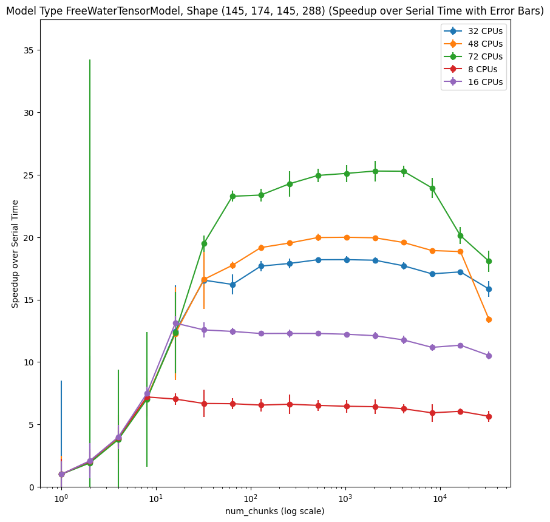

![]()
1 🚧 Under construction 🚧
2 Abstract
3 Introduction
Ray is a great system for parallelization (https://arxiv.org/abs/1712.05889).
4 Methods
We ran both a constrained spherical deconvolution model and a free water diffusion tensor model through DIPY on a subject from the human connectome project (add more about hcp). We created a docker image to encapsulate the test and allow for easy reproducibility of the tests. The testing program computes each model 5 times for each set of unique parameters. We then iterate across chunk sizes exponentially, from 1-15, where the number of chunks is 2^x (explain better). We ran the tests with the following arguments on docker instances with CPU counts, 8, 16, 32, 48, and 72:
--models csdm fwdtim --min_chunks 1 --max_chunks 15 --num_runs 55 Results
Parallelization with ray provided considerable speedups over serial excicution for both constrained sperical deconvolution models and free water models. We saw a much greater speedup for the free water model, which is possibly explained by the fact that it is much more computationally expensive per voxel. This would mean that the overhead from parallelizing the model would have a smaller effect on the runtime. Interestlingly 48 and 72 core instances performed slightly worse than the 32 core instance on the csdm model, which may indicate that there is some increased overhead for each core, separate from the overhead for each task sent to ray.
|  |
Efficiency decreases as a function of number of CPUs, but is still rather high in many configurations. Efficiency is also considerably higher for the free water tensor model, which is consistent with out expectations given that it is more computationally expensive per voxel and therefor ray overhead would have less effect. The high efficency of 8 core machines suggest that the most cost effective configuration for processing may be relativly cheap low core machines.
XXX Plot peak efficiency as a function of number of CPUs for the two models. The slope is probably related to the cost-per-voxel of each model (a lot higher for FWDTI).
Ray tends to spill a large amount of data to disk and does not clean up afterwards. This can quickly become problematic when running multiple consecuitive models. Withing just an hour or two of running ray could easily spill over 500gb to disk. We have implemented a fix for this within our model as follows:
There seems to be an inverse relationship between the computational cost per voxel and the speedup that you get from parallelization. This is why CSD speedup is maximal for 32 cores.
XXX We should try to make a theoretical guesstimate of the cost (in $) per model with the cost of different machines in mind, making some assumptions about the differences between a 32-core and a 72-core machine. We might still come out ahead using 72 CPU machines, given the cost differential in this kind of calculation..
if engine == "ray":
if not has_ray:
raise ray()
if clean_spill:
tmp_dir = tempfile.TemporaryDirectory()
if not ray.is_initialized():
ray.init(_system_config={
"object_spilling_config": json.dumps(
{"type": "filesystem", "params": {"directory_path":
tmp_dir.name}},
)
},)
func = ray.remote(func)
results = ray.get([func.remote(ii, *func_args, **func_kwargs)
for ii in in_list])
if clean_spill:
shutil.rmtree(tmp_dir.name)6 Discussion
6.1 Acknowledgments
This work was funded through NIH grant EB027585 (PI: Eleftherios Garyfallidis) and a grant from the Chan Zuckerberg Initiative Essential Open Source Software program (PI: Serge Koudoro).